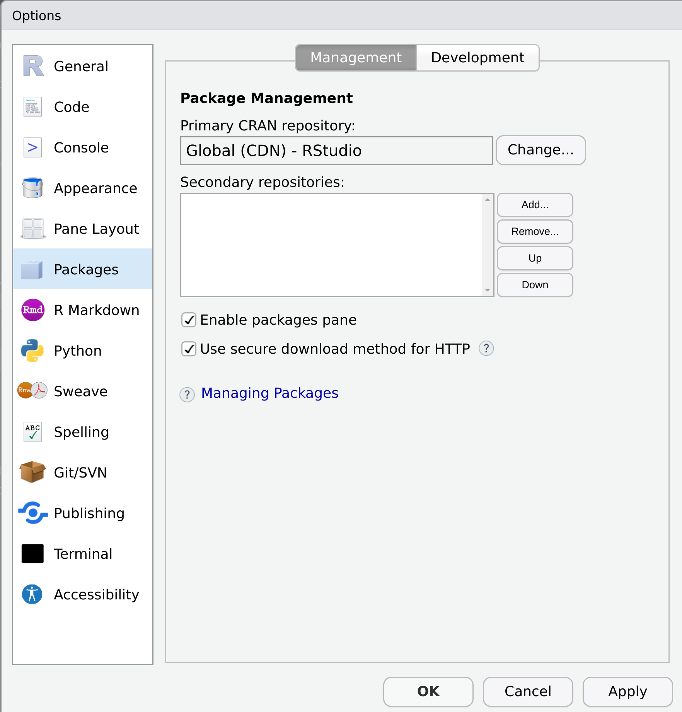
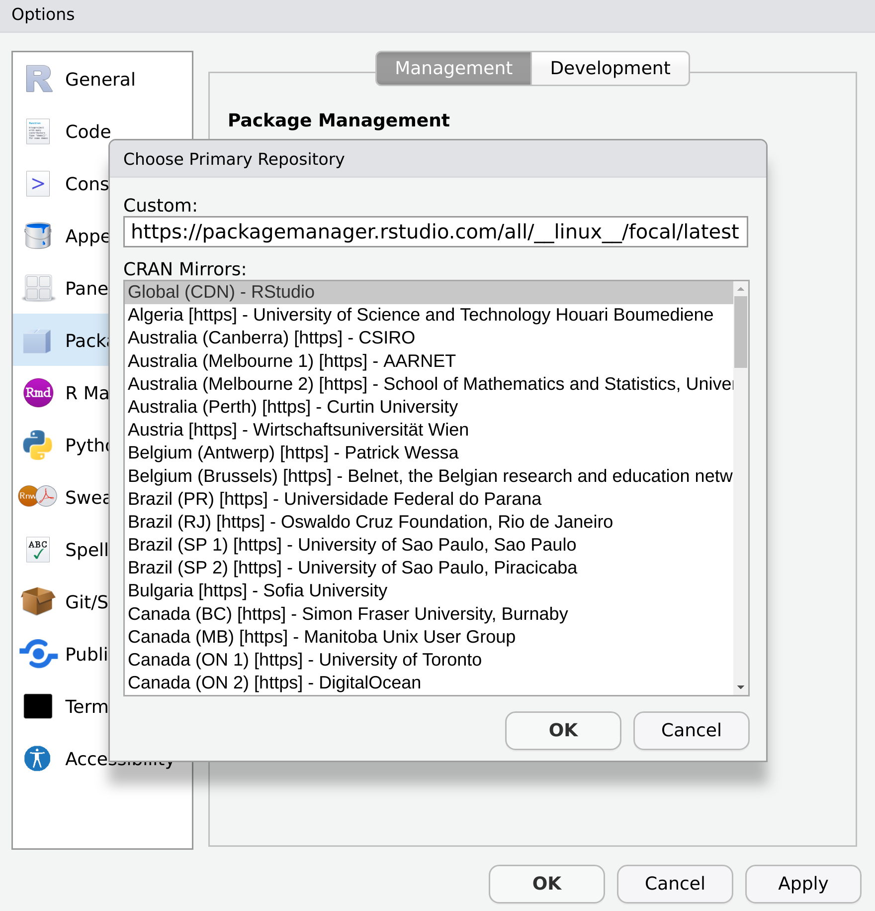
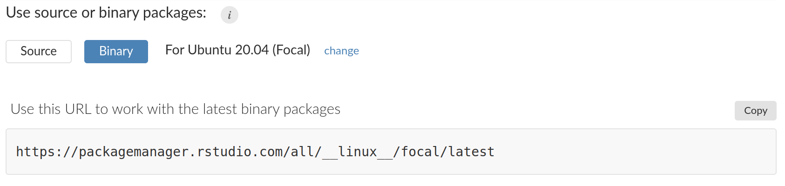

![]()

The shiny new work laptop arrives. Pristine and beautiful in its factory-fresh state. I am in love.
I remain in love right up the moment I remember that with new work laptop comes the peculiar torture of setting up the machine. My gorgeous little Dell XPS 13 shipped with Windows 11, and while I do quite like Windows these days, I’ve become very accustomed to working in linux, so my first task was to install Ubuntu 20.04. These days that’s a pretty easy task, and the Ubuntu installer was even thoughtful enough to give me an option to enable full disk encryption. It all went smoothly. Yay me!
Equipped with my fabulous new operating system, my next steps were to install R and RStudio, and for the first time in my life I was smart enough to remember to install the latest version of git along with the build-essential packages that I’m pretty much guaranteed to need the moment I need to build anything from source. Yay me again!
Then comes the horror. Installing R packages. On linux. A small part of me dies.
I’m sure every linux-based R user shares my pain and needs no explanation, but some of the gentler souls who use Windows or Mac OS may not be aware of how tiresome package installation is on linux. The problem that linux users face is that CRAN does not maintain binaries for linux, so every time a linux user wants to install a package, it has to be built locally from the source code. This is both time consuming and frustrating, and very often you have to go hunting around to discover what other system dependencies need to be installed. So many tears have been shed over this.
So.
Many.
Tears.
RStudio package manager
Recently, however, I have become aware that a better world is possible thanks to the magic of RStudio package manager. I’d sort of known that this existed as an option, but it wasn’t until today that I realised that — in addition to the fancy commercial options — RStudio maintains a public package manager as a free service: the FAQ page is here. Anyone can configure R to install packages from the RStudio public package manager, if they want to.
But first a tiny bit of context… back in the distant part there was this strange, nightmarish time where I was teaching students R, but RStudio was not yet a thing. Many of the little niceties that RStudio users now take for granted didn’t yet exist. In those dark years I had to spend a lot of time explaining to students that CRAN — the comprehensive R archive network — isn’t actually a single website that contains lots of R packages. It’s more like a whole network of mirrors distributed all over the world, and you’d have to manually choose which one you wanted to install packages from. It was mildly annoying. It’s considerably simpler now, because you can use the cloud.r-project.org service that automatically directs you to an appropriate server. In fact, if you’re using RStudio you’ve probably been using this service all along.
RStudio package manager provides a modern alternative: it works like a CRAN mirror, but it has a lot of additional functionality. It has broader coverage, for instance: it includes R packages on Bioconductor as well as packages on CRAN. For my purposes, however, the attractive property is that it hosts binaries suitable for Ubuntu and other flavours of linux.
“But how do I try it out, Danielle?” I hear you ask.
I’m so glad you asked, dear reader, because it’s so much easier than it sounds.
Method 1: RStudio settings
If you’re using RStudio, the easiest way to switch to RStudio PPM is to change your settings inside RStudio. Go to the RStudio Tools menu and select Global Options. When the popup window appears, click on Packages. You’ll see a screen that looks like this:

If it says “RStudio Global CDN” next to “Primary CRAN repo”, then you’re using cloud.r-project.org as your CRAN repository. To switch to RStudio PPM, click on the “change” button. It will bring up a list of CRAN mirrors, and if you want you can choose one of those. However the RStudio PPM isn’t technically a CRAN mirror, so it’s not listed there. If you want to switch to using the RStudio PPM, you have to enter the URL manually.
So what URL do you want? Well, it depends on whether you want to install packages from binaries or from source, and on what operating system you’re using. I’m on Ubuntu 20.04, “Focal Fossa”, and the URL that serves binaries for my operating system is:
https://packagemanager.rstudio.com/all/__linux__/focal/latestHere’s me in the process of entering the URL:

Okay, but what if you’re not on Ubuntu 20.04? If you’re on a different version of Ubuntu or some other operating system, you can find the link you need from the package manager setup page. The relevant part of the page should look something like this:

To get the URL you’re looking for, click on the “change” link to choose your operating system, or toggle between the binary and source options.
Method 2: Edit your R profile
There are a couple of limitations to this method. The most obvious one is that it’s no help if you don’t use RStudio, and even for RStudio users it can be awkward if you don’t always use RStudio. If that’s your situation, you may want to manage your CRAN repository links by editing your R profile. To do this, open the .Rprofile file — using usethis::edit_r_profile(), for example — and add the following line:
options(repos = "https://packagemanager.rstudio.com/all/__linux__/focal/latest")You’ll need to restart your R session for this change to take effect.
If you want to be fancy, you can list multiple URLs. If the package you want to install is not found at the first link, R will try the second link, and so on. That can be useful. For instance, this is what I use in my R profile:
options(repos = c(
binary = "https://packagemanager.rstudio.com/all/__linux__/focal/latest",
source = "https://packagemanager.rstudio.com/all/latest",
CRAN = "https://cloud.r-project.org",
djnavarro = "https://djnavarro.r-universe.dev"
))Using this configuration, R will look for a suitable binary version of the package on RStudio PPM. If that fails it will try to install from RStudio PPM by building the package from the source code. If that fails, it checks CRAN in the usual way. Finally, if that fails, it looks to see if the package I’m requesting is one of the packages I listed at djnavarro.r-universe.dev, my very own tiny corner of the R-universe. Obviously, you’re very unlikely to want to use my R-universe repository since it only consists of a handful of my own packages: but it’s quite handy for me since they aren’t all on CRAN!
Epilogue
If you’re a Windows or Mac user, you might not be aware of how much of a game changer this is for linux users. For example, in my previous blog post I wrote about my experiences getting started using Apache Arrow. I’m a big fan of Arrow — which should come as no surprise as I’ve recently started work at Voltron Data — but if you’re installing the arrow R package on linux, it’s extremely time consuming to build all the C++ libraries from source. It was a little cumbersome, but after switching to RStudio PPM, I can install arrow on my Ubuntu machine using the exact same command I’d use on Windows…
install.packages("arrow")…and everything works. As easy on linux as it is on other operating systems! Yay! 🎉
Reuse
Citation
BibTeX citation:
@online{navarro2022,
author = {Navarro, Danielle},
title = {Setting {CRAN} Repository Options},
date = {2022-01-10},
url = {https://blog.djnavarro.net/setting-cran-repositories},
langid = {en}
}
For attribution, please cite this work as: